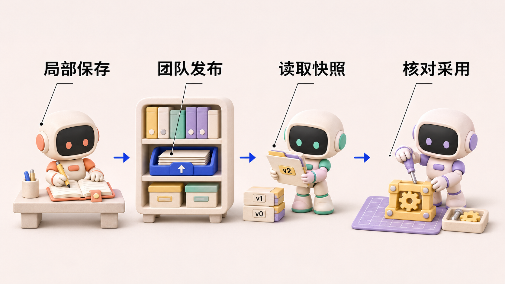
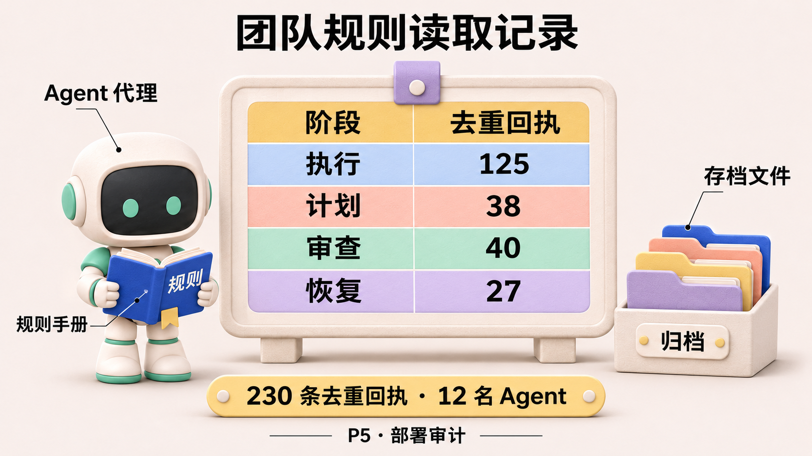

agent-center 是一个组织多个 AI Agent 协作完成软件开发任务的系统。Agent 在其中接收目标、调用工具，参与实现、检查与交付。《Agent 协作手记》以这个项目的开发和运行记录为线索，讨论各模块的设计选择、实现效果，以及实践中暴露的问题。
Agent 协作手记 · 第 7 篇
一、需求动机
团队曾保存过一条完成规则：任务完成前，代码必须合入主分支 main。把它用在最终交付上，要求很清楚。但在一段实际候选交接记录里，这条规则与任务本身的顺序撞上了：开发者要先交出一版代码供独立验收，验收通过之后才能合并；验收任务又在等待开发者先完成交接。
结果是双方互相等待。开发者因为没有合入主分支，不能把中间候选任务标为完成；验收者因为上游任务没完成，无法进入后续环节。原生任务的阻塞理由直接记录了这个矛盾。后来把候选改成只交证据的任务、重新组织流程，后继节点仍然受同一条无例外规则限制。部署案例 M02：研究工作稿 P5 §4.3
这次问题不能用“Agent 没读到规则”解释。恰恰是规则被用到了不合适的阶段。现场操作者也强调过同一约束，因此不能把全部影响都归到持久记忆上；但冲突本身很明确：最终交付的要求，被提前施加给了本来只负责交出候选的中间环节。
本文所说的“记忆”，是可以在会话之外保存、供后续工作重新读取的经验与规则，不是训练模型，也不意味着读过一次就永久记住。成员查代码、修故障和运行测试时积累的经验，值得跨任务复用；新会话却不会天然拥有旧会话的全部信息，因此保存、共享和读取都需要明确机制。
开头的案例又增加了一项要求：规则被找到之后，还要判断它适用于什么任务、哪个阶段。如果步骤或约束后来变化，接收者也需要分辨新旧版本。只保证“团队都能读到”，还没有回答“这次应该怎么用”。
因此，本篇讨论的需求有两层：让经验能够跨任务、跨成员保留下来，并让成员在合适的时机使用合适的版本。后面先介绍存储、共享和读取方案，再用读取记录与具体处置结果检验它们解决了什么、遗漏了什么。
二、方案选择
把全部经验放进一份共享文件，发布简单，但每次局部试错都可能改变其他人的行为。完全留在成员本地则相反，别人遇到同一问题仍须重做调查。项目把“在哪里保存”和“何时对团队生效”拆成两个决定。局部经验按作用域，也就是经验所属的任务、项目或团队范围保存，值得推广的内容进入团队仓库，再按阶段读取指定版本。代价是必须维护发布、权限和刷新语义。
记忆存在哪里
本地 Memory 代码按 global、team、project、task、issue、conversation、worker、supervisor 等作用域映射文件路径；运行时可沿祖先作用域读取需要的材料。它保留了局部经验的空间：一个 Task 的事实不必立即上升为全局规则。代码：记忆作用域
团队共享还有另一条路径：Center 托管团队 Git 仓库，模板或团队经验可以写成独立条目，成员通过读取接口获得快照。用 Git 的好处是变化可追溯，发布也能处理并发写入；但仓库里有文件，只说明内容被保存了，不能说明特定 Agent 在特定任务中看见并正确使用。代码：团队记忆发布 · 代码：团队记忆读取

图 1：保存、共享、读取和采用分别需要证据。最后一环是评估要求，不代表已有自动行为评估机制。
这张图里需要重点核对的是发布授权、读取阶段和确切版本。项目目录通常不是一个天然的团队广播频道；而团队规则若被写成不分阶段的命令，可能在中间交接时执行了只适合最终发布的门禁。
文件目录与共享权限，是两张不同的地图
projects/X/MEMORY.md 这样的路径表达的是主题作用域。它并不承诺其他工作节点（Worker）、其他 Agent 的私有主目录 里会自动出现相同文件。团队共享则需要明确的仓库、授权和读取入口。把项目名相同误读成“全体成员拥有同一份项目记忆”，会导致最基本的诊断错误：发送者以为已经记下，接收者事实上没有读到。
团队读取接口返回的也不只是正文。RuleSnapshot 带 TeamID、Phase、Commit、规则列表、跳过条目和刷新语义。当前约定是在加载或新建临时执行（load/fork）时取快照；正在运行的临时执行者 Executor 和部分恢复路径保留既有输入，新建执行或更彻底的会话重置（reset）才重新读当前仓库。这是确定性和新鲜度之间的取舍：不能指望修改仓库后所有在途执行立刻改变行为，也不能因此把所有旧行为都诊断为刷新故障。RuleSnapshot 与刷新约定
| 层面 | 它提供什么 | 不自动提供什么 |
|---|---|---|
| 私有文件与 Git 历史 | 成员经验和版本追溯 | 跨成员传播 |
| 项目作用域 | 相关材料的组织方式 | 所有成员都能访问 |
| 团队仓库与读取 API | 授权传播和确切版本 | 模型已理解、已采用 |
| Phase 过滤 | 阶段相关规则集合 | 规则内容没有冲突 |
| 正文读取回执 | 某上下文实际查询过正文 | 最终交付因此改善 |
示例 · 同一条规则在两张工单上的含义。 开发工单要求交付可获取的固定候选，集成工单要求把通过独立验收的候选合入 main。开发者交出候选时可以完成第一张工单，集成人此时仍应保持第二张打开。如果两张工单共享一句无条件的“合入才算完成”，Tester 就可能永远等不到开始验收的信号。

图 2：根据 P5 案例概括的依赖冲突。阶段限定改变规则适用范围，单纯重新建图不能解除规则冲突。
三、实现效果
230 条读取回执，为什么还不等于记忆有效
项目关于记忆传播与规则适用性的研究工作稿（编号 P5），在部署审计中留有 230 条正文读取回执，覆盖 12 名 Agent。按首次留存回执的 phase 分布，execute 为 125、plan 为 38、review 为 40、recovery 为 27。由于回执按上下文、团队、commit 和规则去重，它们不是全部读取调用次数，也不是 token 成本。所有这些回执的 commit 与读取前最新入库的团队变更一致，正文 blob 也一致，说明至少在这些审计时点，不能把失败归咎于“大家都读到了旧版本”。P5 §4.2
开头的 main 规则冲突则需要另一类证据：接收者究竟因为什么没有交接。任务的阻塞理由明确指向合入条件，重新建图后同一条件仍然存在。读取审计帮助我们核对规则版本，任务记录才说明规则怎样影响了动作。两者结合，支持把“最终交付合入 main”限定在最终集成阶段，让中间环节凭不可变、可访问的候选与必要证据完成交接；单独增加读取次数解决不了这个问题。

图 3：P5 部署审计中的阶段分布。计数经过去重，不能视作全部读取次数或规则采用率。
执行阶段有 125 条回执，占 230 条中的约 54%。用这个比例做容量规划仍会缺少重复读取次数，用它给规则按“价值”排序则会缺少应用机会的分母。一个只在最终集成时触发的规则，即使只读过一次，也可能拦住代价很高的错误。我的做法是让回执回答“当时读了哪个版本”，另在有应用机会的工单上核对“采取了什么行动”。
一条正确的规则也可能在错误时间产生错误结果
假设团队有一条“未通过完整集成测试不得交付”的规则。在最终发布时，它很合理。但开发者需要先把中间候选交给 Tester，后者才能运行完整测试。如果系统把同一句话原封不动用于候选交接，就会形成死结：没有交接不能验收，没有验收不准交接。问题不在规则的字面内容，而在它缺少适用阶段、例外和替代动作。
P5 论文工作稿核对了私有、项目、团队三个层面的存储和读取，并在固定阶段比较了四种规则条件下的 32 次处置。无条件规则阻断了四次中间交接中的一次；其余三组在这组任务里均完成四次交接。这可以说明规则适用性值得单独检查，不能证明某种记忆层次的长期生产收益已经得到验证。研究工作稿 P5

图 4：P5 的 32 次首步处置。两列分别检查中间交接和最终暂缓，不能把它们当成同一项交付指标。
P5 表 4 中，无规则组也全部正确，因此不能把所有正确结果归功于记忆；图中展示的是阶段冲突的一个受控对应。
四、总结反思
按版本发布、按阶段读取，给团队留下了能审计的传播记录。做错的是把最终主分支门禁写成对所有任务都成立的通则。修正应保留最终发布要求，同时给中间候选写出可检验的交接条件。
文件写下以后，还要继续看它去了哪里
第一，写入：经验有没有落到正确作用域，能否追溯来源。第二，可达：需要它的成员是否有权、也确实能够读到。第三，采用：当前决策有没有引用它，而不是仅在上下文里出现。第四，适用：这条经验对当前候选、任务阶段和权限条件是否仍然成立。只统计文件数或读取数，测到的是前两步，无法替代后两步。
因此，我们不应一遇到协作失误就“把更多历史塞进 prompt”。更可行的是给团队规则写明触发条件、作用阶段、例外、失效版本和出现冲突时的替代动作。个人经验要先经过筛选，再升级为团队共识；团队共识也应能被后续反例修订。这里的目标不是建立永远正确的规则库，而是让错误规则可以被定位、质疑和替换。
给规则多写几句适用条件
比较这两种写法：
所有任务必须先合入 main 才能完成。
以及下面这份建议模板：
purpose: 保证最终交付进入主分支
applies_to: 最终集成与发布
intermediate_handoff: 可用不可变且可访问的候选交接
required_evidence: 候选标识、合同、适用检查与结果
supersedes: <被替代规则的标识或版本>
on_conflict: 标明冲突合同，升级给有权裁决者
第二份更长，但它把完成整项交付与完成中间节点区分开。规则系统应该鼓励这种结构，而不是奖励短小、绝对、像口号的命令。更重要的是，发布新规则不能只做 Git commit，还需要让读取者知道它替代什么、何时加载、在途执行是否需要重建。
最初希望团队“记住”的时候，注意力很容易落在保存和共享上。现在有了版本与读取记录，更需要继续往后看：这条经验到了哪项任务里，又促成了什么动作。一条团队规则，应该连同它的适用条件一起被记住。 存储和读取机制还要继续做，但把局部经验写成无条件通则的习惯需要改。下一篇回到开发现场，讲我们怎样与 Agent 一起写下这些规则，又怎样发现规则本身也需要修改。